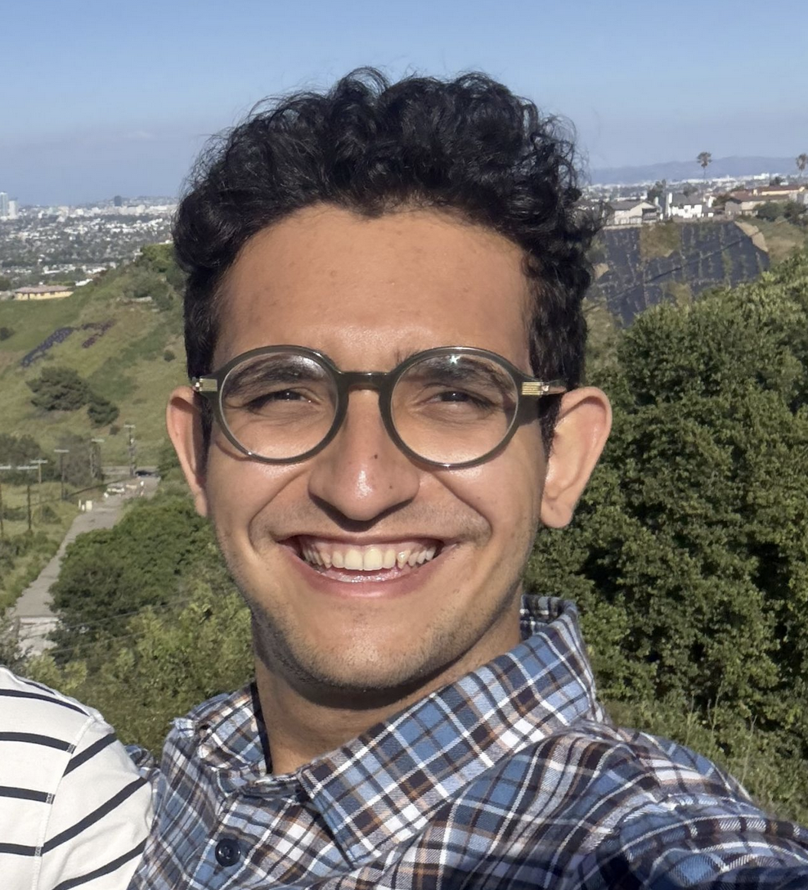

I am a first-year medical student (M1) at the Keck School of Medicine of USC, having previously completed my B.S./M.S. at USC (5 Trojan years and counting...) My research interests lie at the intersection of machine learning, bioinformatics, and medicine, with a focus on building computational tools to understand and predict biomedical phenomena.
I am currently tackling two problems. At the Nagiel Laboratory at Children's Hospital Los Angeles, I use brightfield microscopy images of human retinal organoids to predict their future developmental quality using deep learning. In the USC Department of Urology, I work under Dr. Mitchell Goldenberg applying computer vision and deep learning to quantify intraoperative blood loss during retroperitoneal partial nephrectomy (RPN), as well as testing vision language models for assessing prognostic yield during lateral pelvic node dissection (LPND) in robot-assisted radical prostatectomy (RARP).
Previously, I contributed to the Rohs Lab at USC, where I helped develop RNAproDB, a database and visualization tool for RNA-protein complex structures. Before that, I worked under Dr. Mohammad Pourhomayoun on the Predicting What We Breathe project, where I helped build the first Digital Twin of the City of Los Angeles to monitor PM2.5 levels using a dense network of low-cost air quality sensors and to forecast future air quality from historical data. I also helped translate those predictions into epidemiological forecasts for prevalent conditions linked to air pollution, including asthma, lung cancer, and congenital defects.
I'd be happy to discuss most things that interest you. You can reach me at hiradhos [at] usc [dot] edu.